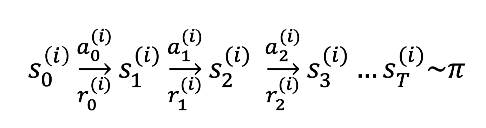
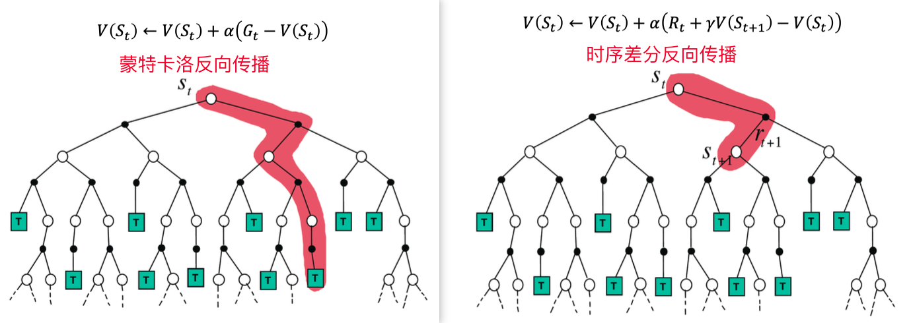
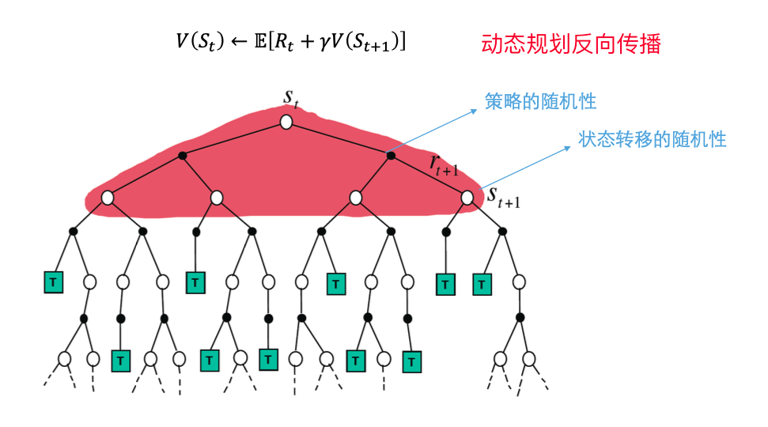
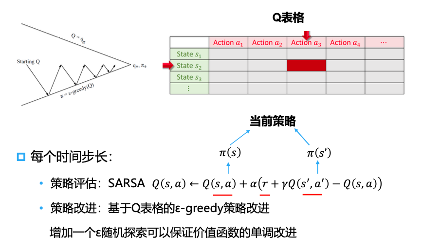

基于值函数的无模型强化学习
基于值函数的无模型强化学习
文章逻辑: 1. 介绍无模型情况下的问题 2. 解析无模型情况下, 通过采样拟合值函数的两种方法(蒙特卡洛和时序差分) 3. 比较两种值函数估计方法 4. 从值估计到Q函数估计, 从评估好坏到如何决策 5. 引出两种Q函数估计方法(SARSA和QLearning)
无模型强化学习算法思路
强化学习的目标: 我们的目标是最大化累计奖励的期望
原有思路: 在模型的基础上按照贝尔曼期望方程不断迭代计算状态价值
面临问题: 在未给定模型或者模型规模太大的时候无法计算或算不出来
核心问题: 只要我们能够解决在没有状态转移概率（无模型）的情况下如何对策略的价值函数进行估计的问题，就可以套用策略迭代的方式求解无模型强化学习的问题
两种思路:
- 蒙特卡洛采样
- 时序差分
蒙特卡洛采样方法
在基于模型的强化学习中, 值函数能够通过动态规划计算获得.
在模型无关的强化学习中:
- 我们无法直接获得\(P_{sa}\)和\(R\)
- 我们可以通过与环境互动采集一系列可以用来估计值函数的经验
蒙特卡洛价值估计
目标: 从策略\(\pi\)下的经验片段学习\(V^{\pi}\)
回顾: 累计奖励(return)是总折扣奖励: \(G_t = R_{t+1} + \gamma R_{t+2} + \cdots + \gamma^{T-1}R_T\)
回顾: 值函数是期望累计奖励:
\[ \begin{align*} V^{\pi}(s) & = \mathbb{E}[R(s_0) + \gamma R(s_1) + \gamma^2 R(s_2) + \cdots |s_0=s, \pi] \\\\ & = \mathbb{E}[G_t|s_t=s,\pi]\\\\ & \simeq \frac{1}{N} \sum\limits_{i=1}^{N} G_t^{(i)} \end{align*} \]
\(V^{\pi}(s) \simeq \frac{1}{N} \sum\limits_{i=1}^{N} G^{(i)}_t\): 经验累积奖励
蒙特卡洛策略评估使用经验累计奖励均值而不是期望累计奖励
对于使用策略\(\pi\)采样到的片段:

- 在一个片段中的每个时间步\(t\)的状态\(s\)都会被访问
- 增量计数器\(N(s) \leftarrow N(s) +1\)
- 增量总累计奖励\(S(s) \leftarrow S(s) + G_t\)
- 价值被估计为累计奖励的均值\(V(s) = S(s)/N(s)\)
- 此时由大叔定律可知:\(V(s) \rightarrow V^{\pi}(s) \ as \ N(s) \rightarrow \infty\)
以上方案是蒙特卡洛价值估计的核心思路, 但是实际使用时以上步骤的运算代价较大, 因此一般使用如下的增量更新方式.
- 增量更新\(V(s)\)
- 对于每个状态\(S_t\)和对应累计奖励\(G_t\)
\[ \begin{align*} N(S_t) & \leftarrow N(S_t) +1\\\\ V(S_t) & \leftarrow \frac{1}{N(S_t)}(G_t - V(S_t)) \end{align*} \]
\(G_t \leftarrow r + \gamma G_t\)
蒙特卡洛方法的特点
核心: \(V(S_t) \simeq \frac{1}{N} \sum\limits_{i=1}^{N} G_t^{(i)}\)
实现方式: \(V(S_t) \leftarrow V(S_t) + \underbrace{\alpha}_{1/N(S_t)} (\underbrace{G_t}_{一次采样的真实值} - \underbrace{V(S_t)}_{当前的估计值})\)
价值 = 平均累积奖励
公式的本质是一次更新让估计值朝着真实值的方向更新一小步
- 蒙特卡洛方法: 直接从经验片段进行学习
- 蒙特卡洛是模型无关的: 未知马尔可夫决策过程的状态转移/奖励函数
- 蒙特卡洛从完整的片段中进行学习: 没有bootstrapping方法
- 蒙特卡洛采用的思想: 价值 = 平均累积奖励
- 限制: 只能将蒙特卡洛方法应用于有限长度的马尔可夫决策过程
时序差分(Temporal Difference Learning)方法
先来看蒙特卡洛值估计的递推公式:
\[ V(S_t) \leftarrow V(S_t) + \alpha (\underbrace{G_t}_{G_t = R_t + \gamma R_{t+1} + \gamma^2 R_{t+2} + \cdots} - V(S_t)) \]
\(G_t = R_t + \gamma R_{t+1} + \gamma^2 R_{t+2} + \cdots\)所以显然, 计算\(G_t\)需要知晓整个轨迹的信息.
此时我们可以将\(G_t\)转化为一个近似的形式:\(G_t = R_t + \gamma V(S_{t+1})\), 此时价值估计的递推公式就变成了:
\[ V(S_t) \leftarrow V(S_t) + \alpha \underbrace{(\underbrace{\underbrace{R_t}_{观测值} + \gamma \underbrace{V(S_{t+1})}_{对未来的猜测}}_{Target——部分真实值的猜测} - V(S_t))}_{TD \ \ error: \delta} \]
或者简单的可以写成:
\[ V(S_t) \leftarrow V(S_t) + \alpha \ \delta_t \]
由此, 我们就得到了时序差分的价值估计的递推公式. 相应的, 我们也能知道时序差分方法的一些特点:
- 时序差分直接从经验片段中学习
- 时序差分是模型无关的
- 通过bootstrapping, 时序差分从不完整的片段中学习
- 时序差分更新当前预测值使之接近估计累积奖励(非真实值)
多步时序差分
以上讨论得出的是单步时序差分的情况, 也存在多步时序差分方法.
对于多步时序差分方法(假设为\(n\)步), 我们的target变成了:
\[ G_t^{(n)} = R_t + \gamma R_{t+1} + \cdots + \gamma^n R_{t+n} + \gamma^{n+1}V(S_{t+n}) \]
此时, 时序差分学习公式变成了:
\[ V(S_t) \leftarrow V(S_t) + \alpha (G_t^{(n)} - V(S_t)) \]
比较蒙特卡洛和时序差分
更新过程
增量地进行蒙特卡洛过程:
\[ V(S_t) \leftarrow V(S_t) + \alpha (G_t - V(S_t)) \]
更新值函数\(V(S_t)\)使之接近准确累积奖励\(G_t\)
时序差分学习算法:
\[ V(S_t) \leftarrow V(S_t) + \alpha (R_t + \gamma V(S_{t+1}) - V(S_t)) \]
更新\(V(S_t)\)使之接近估计累积奖励\(R_t + \gamma V(S_{t+1})\)
观察我们可以发现:
- 蒙特卡洛方法的target是\(G_t\), 是希望自己的价值函数能够接近\(G_t\)
- 时序差分方法的target是\(R_t + \gamma V(S_{t+1})\), 是希望自己的价值函数能够接近\(R_t + \gamma V(S_{t+1})\), 期中\(V(S_{t+1})\)是时序差分的价值函数, 也是估计值
偏差(Bias)/方差(Variance)的权衡
- MC采用累积奖励\(G_t = R_t + \gamma R_{t+1} + \cdots + \gamma^{T-1} R_T\)是\(V^{\pi}(S_t)\)的无偏估计.
- TD使用的目标\(R_t + \gamma \underbrace{V(S_{t+1})}_{当前估计}\)是\(V^{\pi}(S_t)\)的有偏估计
时序差分目标具有比累积奖励更低的方差:
- 累积奖励目标——取决于多步随机动作、多步状态转移和多步奖励
- 时序差分目标——取决于单步随机动作、单步状态转移和单步奖励
特点
| 蒙特卡洛 | 时序差分 |
|---|---|
| 只能够从完整序列中学习 | 能够从不完整的序列中学习 |
| 只能在片段化(有终止)的环境下工作 | 能在连续(无终止的)的环境下工作 |
| 高方差、无偏差 | 低方差、有偏差 |
| 良好的收敛性质 | 通常比蒙特卡洛方法更加高效 |
| 对初始值不敏感 | 对初始值更加敏感 |


无模型价值估计总结
- 无模型的强化学习把环境当作黑盒
- 在黑盒环境下，值函数的估计方法主要包括蒙特卡洛和时序差分法
- 蒙特卡洛方法通过采样到底的方式直接估计价值函数
- 时序差分学习通过下一步的价值估计来更新当前一步的价值估计
- 实际使用中，时序差分方法更加常见
从知道什么是好的, 到如何行动
以上, 我们介绍了两种值函数估计方法: 蒙特卡洛和时序差分.
在知道\(V\)函数(或者说值函数)的情况下, 我们可以通过如下公式选择行动:
\[ \pi(s) = \mathop{\arg\max}\limits_{a\in A} \sum\limits_{s'\in S}P_{sa}(s')V(s') \]
但是在无模型的情况下, \(P_{sa}(s')\)是未知的, 因此直接从\(V\)函数, 我们没有办法直接选择行动.
此时, 我们就想到:我们可以不去拟合\(V\)函数而是直接拟合\(Q\)函数, 这样我们就可以直接基于当前状态选择对应\(Q\)值最大的动作就可以了.
\[ \pi(s) = \mathop{\arg\max}\limits_{a\in A}Q(s,a) \]
即, 估计\(Q\)函数对做动作有直接作用
估计\(Q\)函数也有两种经典的方法:
- 用自己的经验估计自己的\(Q\)函数: On policy方法——SARSA
- 用别人的经验估计自己的\(Q\)函数: Off policy方法——Q-learning
这里
自己的经验是指, 完全由策略\(\pi\)选择动作产生交互经验, 然后用来改进策略\(\pi\)
SARSA方法
SARSA方法的\(Q\)函数学习方法为:
\[ Q(s_t, a_t) \leftarrow Q(s_t, a_t) + \alpha (r_t + \gamma Q(s_{t+1} + a_{t+1}) - Q(s_t, a_t)) \]

SARSA算法中的两个“A”都是当前策略的选择
每次更新需要当前策略的5元组采样(状态-动作-奖励-下一个状态-下一个动作)
Q-learning算法
在线策略(On policy)的缺点: 一旦策略更新后, 过去的经验就不能再次利用了, 这要求算法必须边采样, 边学习, 这会导致采样效率比较低下
在离线策略学习中, 我们将策略分成两个部分:
- 目标策略: 进行值函数(\(V^{\pi}(s)\)或\(Q^{\pi}(s,a)\))估计的策略
- 行为策略: 与环境交互, 收集数据的策略
QLeaning学习学习算法的改进思路: 允许使用异策略采样, 目标改为直接优化出最优价值函数\(Q^*\)
QLearning的目标策略\(\pi\)是关于\(Q(s,a)\)的贪心策略, 即:
\[ \pi(s_{t+1}) = \mathop{\arg\max}\limits_{a'} Q(s_{t+1}, a') \]
QLearning的行为策略\(\mu\)是关于\(Q(s,a)\)的\(\epsilon\)-greedy策略
QLearning学习的target为:
\[ r_t + \gamma Q(s_{t+1}, a'_{t+1} = r_t + \gamma Q(s_{t+1}, \mathop{\arg\max}\limits_{a'_{t+1}}Q(s_{t+1}, a'_{t+1}))) = r_t + \gamma \max\limits_{a'_{t+1}}Q(s_{t+1},a'_{t+1}) \]
QLearning的更新方式:
\[ Q(s_t, a_t) \leftarrow Q(s_t, a_t) + \alpha (r_t + \gamma \max\limits_{a'_{t+1}}Q(s_{t+1},a'_{t+1})-Q(s_t,a_t)) \]